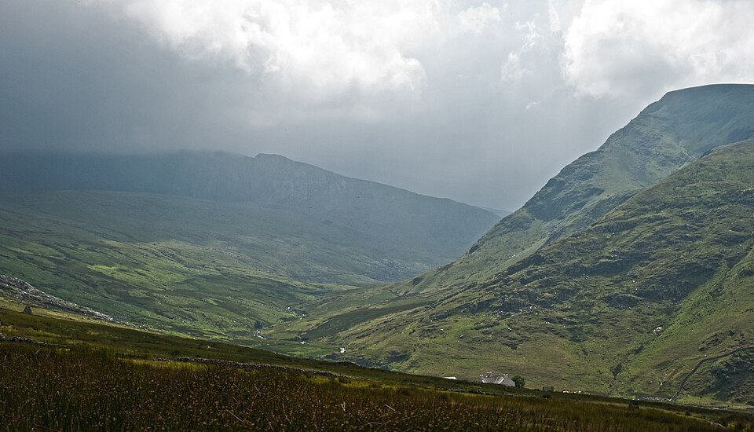

This is a project to create self-graphing algorithms in Javascript using the HTML5 "canvas" element. The reason this will be useful for pedagogical purposes is that the user of the library can closely duplicate algorithms from course material (in our case, we will be using the famous CLRS Algorithms book) and animate those algorithms. The existing tools we have found available come with built in animated data structures, which is fine as far as it goes, but does not allow the educator to create the data structures themselves, from the bottom up.
The name of the project is in honor of the tiny Welsh coal-mining town of Algocynfas, where Prof. Callahan and his friend Anas met, while working 18-hour shifts extracting black diamond from the rocky Welsh hills.
Visualizations
- Sorting Algorithms
- Hash Table
- Minimum Spanning Tree
- Binary Search Tree
- Red Black Tree
- Graph
- Tree
- Heap
- AVL Tree
- Searching and Selection
- Counting and Radix Sort
- Maximum Subarray, Hoare Partition, Min and Max
- Dynamic Programming: Rod Cutting, LCS; Activity Selection
- Graph Search: BFS, DFS, Topological Sort, SCC
- Shortest Paths: Dijkstra, Bellman-Ford
- Graphics Library Test Page
Other links
- Canvas tutorial
- Fabric.js
- Great data structure visualizations
- Sigma.js: a Javascript network graph library
Selina Zhang programmed many of these examples.